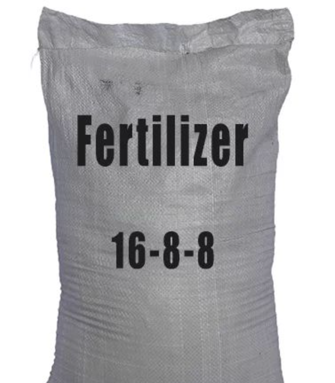
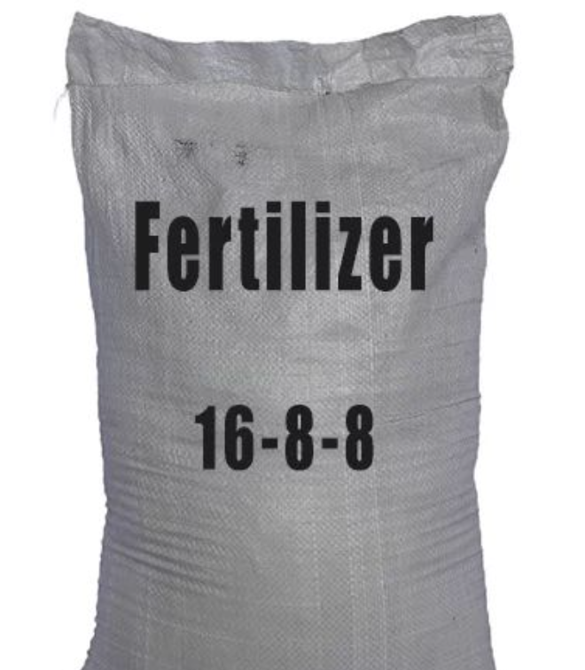

LUMWOD (United Men and Women Organization Development Programme) is a community-based company created to improve the lives of its members through financial empowerment and cooperative development. It focuses on uplifting individuals and families by offering practical financial solutions, resources, and guidance that help members achieve stability and growth. LUMWOD provides funds in four main forms, ensuring that every member has access to support. These include short-term financial assistance for urgent needs, long-term development funds for projects and business expansion, emergency support funds for unexpected challenges, and group investment funds where pooled resources are used to generate income for the benefit of all members. These funding options create a strong financial foundation and make credit easily accessible. The company also offers a safe saving zone, giving members a secure place to save money, build financial discipline, and access their savings when needed. This system encourages responsible money management and helps members accumulate wealth over time. LUMWOD further promotes economic empowerment through table banking, where members contribute to a central pool and borrow directly from it at low interest. This strengthens trust and cooperation within the group.
Lumwod is committed to improving the living standards of its members by providing well-structured households equipped with essential amenities. The homes offered are designed to meet both comfort and practicality, ensuring that families have access to a safe and functional living environment. Each household comes with a reliable water storage system, including tanks and pipes, to guarantee a steady supply of clean water for daily use. Additionally, the houses are fitted with basic utilities such as electricity connections and telecommunication facilities, including phones, which allow residents to stay connected. To support sustainable living, Lumwod also provides materials for everyday domestic tasks. Members often receive jericans for water storage, fertilizers for home gardening, and other household necessities that promote self-sufficiency. The homes are built using durable construction materials, ensuring longevity and minimal maintenance.
 



Lumwod focuses not only on the physical structure of the households but also on enhancing the quality of life for its members by integrating essential tools and resources that facilitate daily living. Through these comprehensive provisions, Lumwod ensures that its members have access to safe, functional, and well-equipped homes that foster comfort, productivity, and community wellbeing.
LUMWOD supports its members by supplying essential foodstuffs that help reduce household expenses and promote food security. The organization distributes a variety of items including flour, salad oil, rice, sugar, vegetables, milk, and indomie. These products are offered at affordable prices or through member support programs, ensuring that every household can access basic necessities without financial strain. LUMWOD buys these food items in bulk directly from suppliers, which lowers the overall cost. The savings gained from bulk purchasing are passed on to members, making the products cheaper than in ordinary shops. Members can receive the foodstuffs through organized distribution days, group contributions, or as part of the benefits linked to their savings and participation in the company. Additionally, LUMWOD ensures consistency and quality by working with trusted suppliers. This system strengthens food availability, supports healthy families, and reinforces the company’s commitment to improving members’ daily lives.